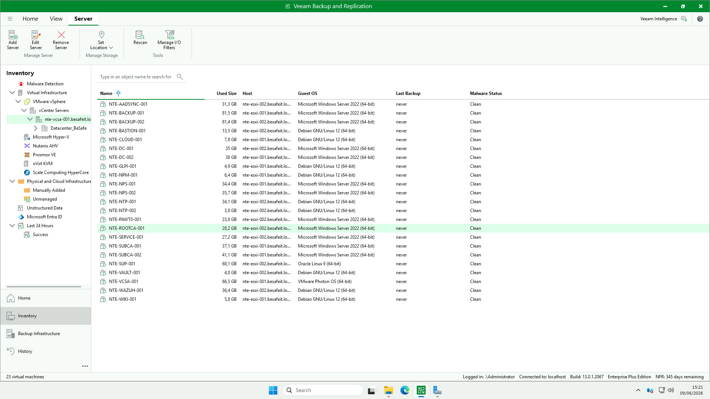
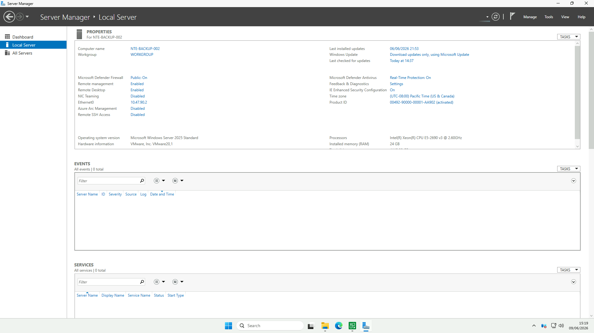
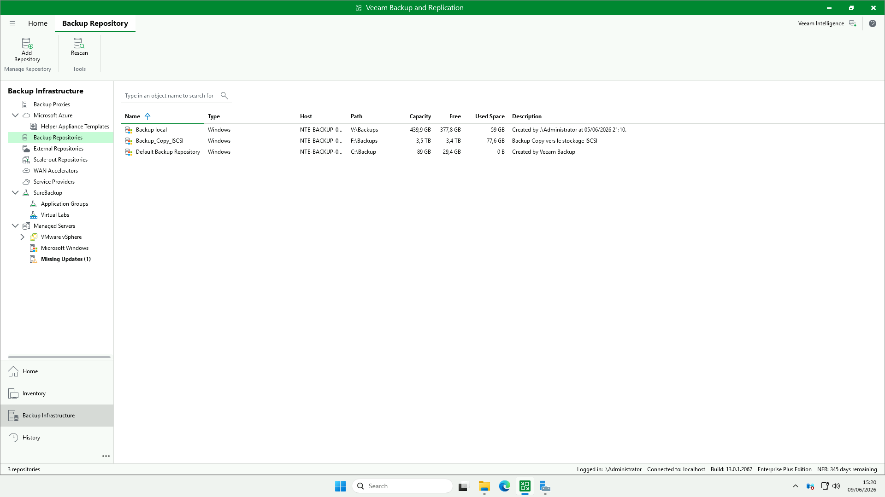
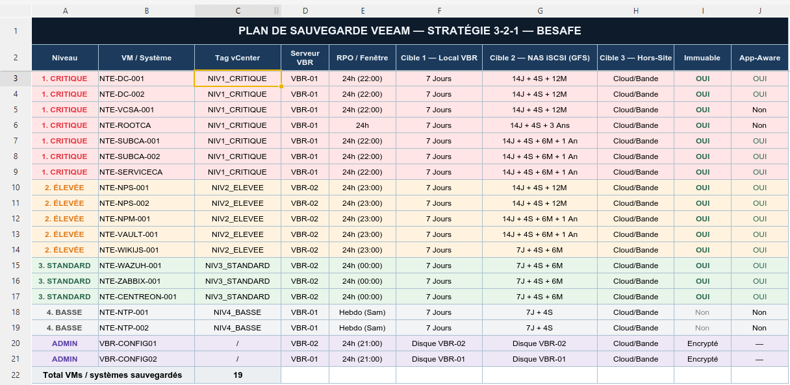
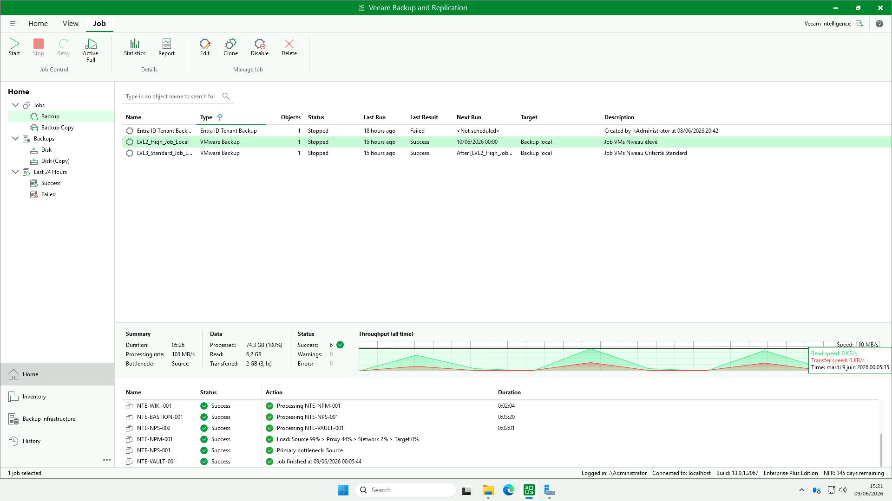

💾 Configuration de la sauvegarde Veeam Backup & Replication
Cette page documente l’infrastructure de sauvegarde Veeam Backup & Replication de l’environnement BESAFE. Elle couvre la stratégie 3-2-1, l’inventaire des VM protégées, les repositories, les jobs et le serveur VBR.
⚙️ Détails techniques
| Élément | Valeur |
|---|---|
| Produit | Veeam Backup & Replication |
| Build | 13.0.1.2067 |
| Édition | Enterprise Plus (NFR – 345 jours restants) |
| Serveur VBR (cette console) | NTE-BACKUP-002 |
| Connexion | localhost (.\Administrator) |
| Hyperviseur protégé | VMware vSphere – vCenter nte-vcsa-001.besafeit.local |
| Datacenter | Datacenter_BeSafe |
🖥️ Étape 1 : Infrastructure protégée (Inventory)
Objectif : connecter Veeam au vCenter afin de découvrir et protéger les machines virtuelles de l’environnement.
📸 Capture 1 – Inventaire vCenter

L’arborescence d’inventaire est rattachée à :
- VMware vSphere → vCenter Servers →
nte-vcsa-001.besafeit.local→Datacenter_BeSafe - Les hôtes ESXi sont
nte-esxi-001etnte-esxi-002(.besafeit.local)
💡 D’autres hyperviseurs sont disponibles dans la console (Hyper-V, Nutanix, Proxmox, oVirt, Scale Computing) mais seul VMware vSphere est utilisé sur BESAFE.
23 machines virtuelles sont découvertes via le vCenter. Extrait :
| VM | Taille utilisée | Hôte ESXi | OS invité |
|---|---|---|---|
NTE-DC-001 / NTE-DC-002 |
35 / 38 GB | esxi-002 | Windows Server 2022 |
NTE-VCSA-001 |
66,5 GB | esxi-001 | VMware Photon OS |
NTE-ROOTCA-001 |
28,2 GB | esxi-002 | Windows Server 2022 |
NTE-SUBCA-001 / 002 |
37,1 / 41,1 GB | esxi-001 | Windows Server 2022 |
NTE-SERVICE-001 |
27,2 GB | esxi-002 | Windows Server 2022 |
NTE-NPS-001 / 002 |
34,4 / 35,7 GB | esxi-001 | Windows Server 2022 |
NTE-NPM-001 |
6,4 GB | esxi-001 | Debian GNU/Linux 12 |
NTE-VAULT-001 |
4,8 GB | esxi-001 | Debian GNU/Linux 12 |
NTE-WIKI-001 |
5,8 GB | esxi-001 | Debian GNU/Linux 12 |
NTE-GLPI-001 |
4,9 GB | esxi-001 | Debian GNU/Linux 12 |
NTE-CLOUD-001 |
7,8 GB | esxi-001 | Debian GNU/Linux 12 |
NTE-WAZUH-001 |
36,4 GB | esxi-002 | Debian GNU/Linux 12 |
NTE-SUP-001 |
68,1 GB | esxi-002 | Oracle Linux 9 |
NTE-BASTION-001 |
13,5 GB | esxi-002 | Debian GNU/Linux 12 |
NTE-PAWT0-001 |
23,6 GB | esxi-002 | Windows Server 2022 |
NTE-AADSYNC-001 |
31,3 GB | esxi-002 | Windows Server 2022 |
NTE-NTP-001 / 002 |
34,1 / 3,8 GB | esxi-002 | Debian GNU/Linux 12 |
NTE-BACKUP-001 / 002 |
81,5 / 81,4 GB | esxi-001 / 002 | Windows Server 2022 |
⚠️ La colonne Malware Status affiche Clean pour toutes les VM, mais Last Backup = never sur l’inventaire : à vérifier (rattachement job ↔ VM, ou inventaire non rafraîchi malgré des jobs en succès — voir Étape 6).
🗄️ Étape 2 : Serveur de sauvegarde (VBR)
Objectif : héberger le rôle Veeam Backup & Replication et les repositories locaux.
📸 Capture 3 – Serveur NTE-BACKUP-002

| Paramètre | Valeur |
|---|---|
| Nom | NTE-BACKUP-002 |
| OS | Microsoft Windows Server 2025 Standard |
| Adresse IP | 10.47.90.2 (VLAN 90 – BACKUP) |
| Processeur | Intel Xeon E5-2690 v3 @ 2.60 GHz |
| Mémoire | 24 Go |
| Plateforme | VM VMware |
| Pare-feu Defender | Public : On |
| Remote Desktop | Activé |
| Defender Antivirus | Real-Time Protection : On |
🔒 Le serveur est sur le VLAN 90 (BACKUP), réseau dédié et isolé pour les flux de sauvegarde. ⚠️ Veeam signale Missing Updates (1) sur les Managed Servers : à corriger.
📦 Étape 3 : Repositories de sauvegarde
Objectif : définir les emplacements de stockage des points de restauration (local + copie iSCSI).
📸 Capture 4 – Backup Repositories

| Repository | Type | Chemin | Capacité | Libre | Utilisé | Rôle |
|---|---|---|---|---|---|---|
Backup local |
Windows | V:\Backups |
439,9 GB | 377,8 GB | 59 GB | Cible primaire (Cible 1) |
Backup_Copy_ISCSI |
Windows | F:\Backups |
3,5 TB | 3,4 TB | 77,6 GB | Backup Copy vers stockage iSCSI (Cible 2) |
Default Backup Repository |
Windows | C:\Backup |
89 GB | 29,4 GB | 0 B | Repository par défaut (non utilisé) |
💡 La règle 3-2-1 s’appuie sur ces deux cibles :
Backup local(V:) en primaire, puis Backup Copy versBackup_Copy_ISCSI(F:, GFS sur NAS iSCSI). 🧹 LeDefault Backup Repository(C:) reste vide (0 B) — à conserver inutilisé pour ne pas remplir le disque système.
🎯 Étape 4 : Stratégie 3-2-1 (Plan de sauvegarde)
Objectif : appliquer la règle 3-2-1 (3 copies, 2 supports, 1 hors-site) avec des niveaux de criticité et de la rétention GFS.
📸 Capture 5 – Plan de sauvegarde BESAFE

Principe : 3 copies · 2 supports différents · 1 hors-site, modulé par niveau de criticité.
| Niveau | VM / Système | Tag vCenter | VBR | RPO / Fenêtre | Cible 1 (Local) | Cible 2 (NAS iSCSI – GFS) | Cible 3 (Hors-site) | Immuable | App-Aware |
|---|---|---|---|---|---|---|---|---|---|
| 🔴 1. Critique | NTE-DC-001 | NIV1_CRITIQUE | VBR-01 | 24h (22:00) | 7 jours | 14J + 4S + 12M | Cloud/Bande | ✅ | ✅ |
| 🔴 1. Critique | NTE-DC-002 | NIV1_CRITIQUE | VBR-01 | 24h (22:00) | 7 jours | 14J + 4S + 12M | Cloud/Bande | ✅ | ✅ |
| 🔴 1. Critique | NTE-VCSA-001 | NIV1_CRITIQUE | VBR-01 | 24h (22:00) | 7 jours | 14J + 4S + 12M | Cloud/Bande | ✅ | Non |
| 🔴 1. Critique | NTE-ROOTCA | NIV1_CRITIQUE | VBR-01 | 24h | 7 jours | 14J + 4S + 3 ans | Cloud/Bande | ✅ | Non |
| 🔴 1. Critique | NTE-SUBCA-001 | NIV1_CRITIQUE | VBR-01 | 24h (22:00) | 7 jours | 14J + 4S + 6M + 1 an | Cloud/Bande | ✅ | ✅ |
| 🔴 1. Critique | NTE-SUBCA-002 | NIV1_CRITIQUE | VBR-01 | 24h (22:00) | 7 jours | 14J + 4S + 6M + 1 an | Cloud/Bande | ✅ | ✅ |
| 🔴 1. Critique | NTE-SERVICEA | NIV1_CRITIQUE | VBR-01 | 24h (22:00) | 7 jours | 14J + 4S + 6M + 1 an | Cloud/Bande | ✅ | ✅ |
| 🟠 2. Élevée | NTE-NPS-001 | NIV2_ELEVEE | VBR-02 | 24h (23:00) | 7 jours | 14J + 4S + 12M | Cloud/Bande | ✅ | ✅ |
| 🟠 2. Élevée | NTE-NPS-002 | NIV2_ELEVEE | VBR-02 | 24h (23:00) | 7 jours | 14J + 4S + 12M | Cloud/Bande | ✅ | ✅ |
| 🟠 2. Élevée | NTE-NPM-001 | NIV2_ELEVEE | VBR-02 | 24h (23:00) | 7 jours | 14J + 4S + 6M + 1 an | Cloud/Bande | ✅ | ✅ |
| 🟠 2. Élevée | NTE-VAULT-001 | NIV2_ELEVEE | VBR-02 | 24h (23:00) | 7 jours | 14J + 4S + 6M + 1 an | Cloud/Bande | ✅ | ✅ |
| 🟠 2. Élevée | NTE-WIKIJS-001 | NIV2_ELEVEE | VBR-02 | 24h (23:00) | 7 jours | 7J + 4S + 6M | Cloud/Bande | ✅ | ✅ |
| 🟢 3. Standard | NTE-WAZUH-001 | NIV3_STANDARD | VBR-02 | 24h (00:00) | 7 jours | 7J + 4S + 6M | Cloud/Bande | ✅ | ✅ |
| 🟢 3. Standard | NTE-ZABBIX-001 | NIV3_STANDARD | VBR-02 | 24h (00:00) | 7 jours | 7J + 4S + 6M | Cloud/Bande | ✅ | ✅ |
| 🟢 3. Standard | NTE-CENTREON-001 | NIV3_STANDARD | VBR-02 | 24h (00:00) | 7 jours | 7J + 4S + 6M | Cloud/Bande | ✅ | ✅ |
| 🔵 4. Basse | NTE-NTP-001 | NIV4_BASSE | VBR-01 | Hebdo (Sam) | 7 jours | 7J + 4S | Cloud/Bande | Non | Non |
| 🔵 4. Basse | NTE-NTP-002 | NIV4_BASSE | VBR-01 | Hebdo (Sam) | 7 jours | 7J + 4S | Cloud/Bande | Non | Non |
| 🟣 Admin | VBR-CONFIG01 | / | VBR-02 | 24h (21:00) | Disque VBR-02 | Disque VBR-02 | Cloud/Bande | Encrypté | — |
| 🟣 Admin | VBR-CONFIG02 | / | VBR-01 | 24h (21:00) | Disque VBR-01 | Disque VBR-01 | Cloud/Bande | Encrypté | — |
Total VM / systèmes sauvegardés : 19
Légende des rétentions (GFS) : J = jours · S = semaines · M = mois.
Exemple : 14J + 4S + 12M = 14 restaurations journalières + 4 hebdomadaires + 12 mensuelles.
🧩 Les niveaux sont pilotés par tags vCenter (
NIV1_CRITIQUE…NIV4_BASSE), ce qui permet d’assigner automatiquement une VM au bon job selon son tag. 📝 Le plan vise 19 systèmes alors que 23 VM sont découvertes : l’écart correspond aux VM non encore intégrées au plan (NTE-AADSYNC-001,NTE-GLPI-001,NTE-CLOUD-001,NTE-PAWT0-001,NTE-BACKUP-001/002…) — à arbitrer.
🔁 Étape 5 : Jobs de sauvegarde
Objectif : organiser les jobs par niveau de criticité, avec chaînage (le job Standard démarre après le job Élevé).
📸 Capture 6 – Vue des jobs

| Job | Type | Dernier résultat | Prochaine exécution | Cible | Description |
|---|---|---|---|---|---|
LVL2_High_Job_Local |
VMware Backup | 🟢 Success | 10/06/2026 00:00 | Backup local | Job VMs Niveau élevé |
LVL3_Standard_Job_L… |
VMware Backup | 🟢 Success | Après LVL2_High_Job… |
Backup local | Job VMs Niveau Criticité Standard |
Entra ID Tenant Backup |
Entra ID Tenant Backup | 🔴 Failed | <Not scheduled> |
— | Sauvegarde du tenant Entra ID |
⛓️ Le job Standard est chaîné après le job Élevé (
After [LVL2_High_Job…]) pour éviter la contention de ressources. ⚠️ Le job Entra ID Tenant Backup est en échec et non planifié : à diagnostiquer (connecteur Entra ID / permissions).
✅ Résumé global
| Étape | Élément | Description | État |
|---|---|---|---|
| 1️⃣ | Inventaire | vCenter nte-vcsa-001 – 23 VM découvertes |
✅ |
| 2️⃣ | Serveur VBR | NTE-BACKUP-002 (VLAN 90) |
⚠️ (1 MAJ) |
| 3️⃣ | Repositories | Local (V:) + Copy iSCSI (F:) | ✅ |
| 4️⃣ | Stratégie 3-2-1 | 4 niveaux + GFS + tags vCenter | ✅ |
| 5️⃣ | Jobs | LVL2 / LVL3 OK · Entra ID en échec | ⚠️ |
| 6️⃣ | Exécution | Job LVL2 : 6 VM, 0 erreur | ✅ |